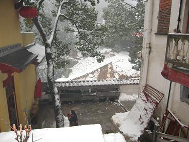
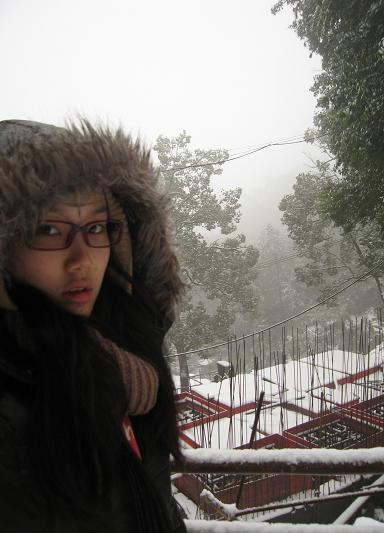
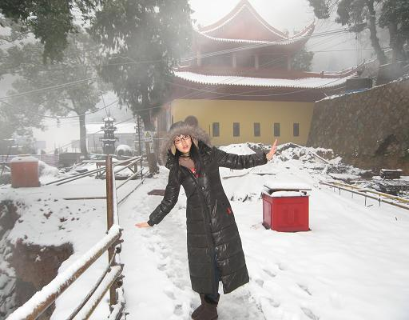
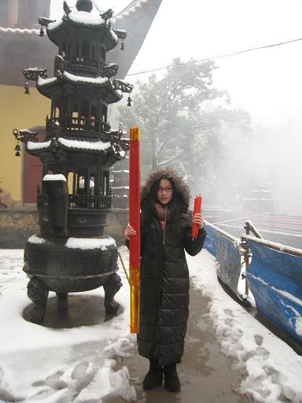

听说有人觉得我很勇敢,居然敢把自己不化妆的照片放在网上.废话,干麻要化妆啊,在我看来,化过妆才能拍照这件事情是非常愚蠢的.过年放大假,终于可以不化妆了,连续素颜13天,简直太爽了.
大年夜一早就和师兄们一起出发前往浙江乌龙山上的玉泉寺,第三年在庙里过年了,每年的年夜饭都会和很多师兄们,方丈,还有一些自愿在庙里当义工的乡亲们一起吃年夜饭,而且每次都会全部吃光,不浪费一粒米,自己洗碗自己铺床叠被子,那天正好是我生日,所以众师兄一起给我唱生日歌哦，福包好大啊,好幸福:)阿弥陀佛
也许是因为在山上,每年大年夜都特别冷,今年也是下起了大雪,下了整整一夜,第二天下山的时候集体鞋子袜子全部湿光和冻僵,我还穿了两双厚袜子,一双连裤袜加两片暖宝宝,上车之后,还不能拖,又湿有闷,就差脚气没闷出来了.阿弥陀佛
每当下雪的时候我就会想起痒的MV,想起过逝的王老师,曾经陪着我站在零下二十几度的雪山,当我冻成招风耳的时候她用冻僵的手帮我挡风,还有和她在雪地里放烟花祈祷痒的成功......阿弥陀佛

这是正在建造的新宿舍,穿过这里可以去到大雄宝殿


